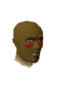
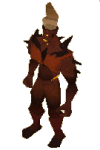
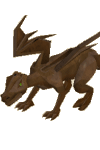

")
Brimhaven Dungeon (Members)
Warning | Introduction | Location | Points of Interest
Personalities | Quests | Denizens of the Dungeon | Miscellaneous
Personalities | Quests | Denizens of the Dungeon | Miscellaneous
Warning
Brimhaven Dungeon is a particularly dangerous area of RuneScape. Most of the creatures that stalk its depths are aggressive, and they can back that up with their extremely high Combat level. Some creatures can cause difficulty to even the highest level adventurers. As death is quite likely the further you go into the dungeon, it is advised that you only take items with you that you are not terribly concerned about losing.
It is highly recommended that you bring an anti-dragonbreath shield due to the large number of dragons in the dungeon.
Introduction

Throughout the tunnels there are occasional pools of lava, where the core of the world cracks through into the dungeon, as if trying to burn itself clean. Despite its fearsome reputation, Brimhaven Dungeon is popular among adventurers seeking a good supply of dangerous creatures to test themselves against.
Location

To the south-east is the native village of Tai Bwo Wannai.
Directly west across the sea is Port Khazard.
Points of Interest

If you find wandering about the dungeon a bit tiresome, and would prefer to use Agility shortcuts, there are a number of crawl pipes you can use to move quickly from one chamber to the next.
The upper level of the dungeon can be reached by using the stairs in the north and west of the dungeon.
Personalities
|

Saniboch is a local tribesman who is employed to watch over the entrance to the Brimhaven Dungeon and to charge adventurers an entry fee. He is always a little bit jealous of those that go inside, as his own skills are not high enough to go very deep himself.
|
| Saniboch can be found outside the entrance to the dungeon. |
Quests
No quests can be started in Brimhaven Dungeon.
Denizens of the Dungeon
![[image]](../../img/main/kbase/npc/area_guides/moss_giant.gif) Moss giants are more commonly seen on the surface of RuneScape, but a sizeable number have found their way into Brimhaven Dungeon, where they and their beards wait for adventurers to disturb them. They are quite strong, but by the dungeon's standards they are positively feeble.
|
![[image]](../../img/main/kbase/npc/area_guides/wild_dog.gif) Wild dogs are aggressive and numerous, and will attack anyone that they see. They are fast and vicious, so it is a very lucky adventurer that manages to travel the dungeon unhindered by these degenerate beasts.
|
![[image]](../../img/main/kbase/npc/area_guides/baby_red_dragon.gif) Though they may be cute, and not appear much of a threat, even the smallest of dragons is a dangerous opponent. Baby dragons are best attacked with stabbing or Ranged weapons, as these are capable of punching through their tough scales.
|

Fire giants are powerful creatures, but wear little armour. What natural toughness they have is a defence against slashing weapons, so those adventurers uncertain of their abilities should try something else.
|
![[image]](../../img/main/kbase/npc/area_guides/greater_demon.gif) Greater demons are made of the stuff of destruction and pain. They exist solely to bring suffering and death to anyone unprepared, and they certainly look the part. They have excellent defence, but as they are essentially magical creatures, they are particularly weak against mages.
|

Like other metal dragons, bronze dragons are covered in hard scales that make them particularly difficult to harm. They are a strange sight in the dungeon, glittering reflections of whatever light source is around them. Because they are covered in these scales, though, they are quite vulnerable to Magic.
|
|
| Greater demons can be found on the upper floor of the dungeon. |
![[image]](../../img/main/kbase/npc/area_guides/red_dragon.gif) Red dragons are powerful enemies whose scales are the colour of blood. They are quite social creatures, like most other dragons, and where you find red dragons you are likely to find their children. Red dragons are best attacked with stabbing weapons or Ranged attacks.
|
![[image]](../../img/main/kbase/npc/area_guides/black_demon.gif) Black Demons are among the most dangerous demons you can face, and should never be underestimated. Their massive size is no illusion to put off adventurers: they truly are terrifying foes. Like other demons, they are weak against magical assaults.
|
![[image]](../../img/main/kbase/npc/area_guides/iron_dragon.gif) In the final cavern of Brimhaven Dungeon is a large number of iron and steel dragons. Though iron dragons are the weaker of the two, they are still fearsome opponents for almost any adventurer, and even more dangerous in numbers. They are metal dragons, though, so Magic is a good approach to take.
|
![[image]](../../img/main/kbase/npc/area_guides/steel_dragon.gif) By far the most dangerous creature you could possibly encounter in Brimhaven Dungeon (and very probably the most dangerous beast in Karamja), steel dragons are vicious monsters that will stop at nothing to slaughter anyone bold or foolish enough to think they can kill them. They are still metal dragons, though, so Magic is probably the best option.
|
Miscellaneous
- Brimhaven Dungeon is the only place in RuneScape where there are red dragons outside the Wilderness.
- Metal dragons drop dragon legs and dragon skirts; the higher the level of dragon the better your odds are of getting some.

More articles in
Dungeons
|
|